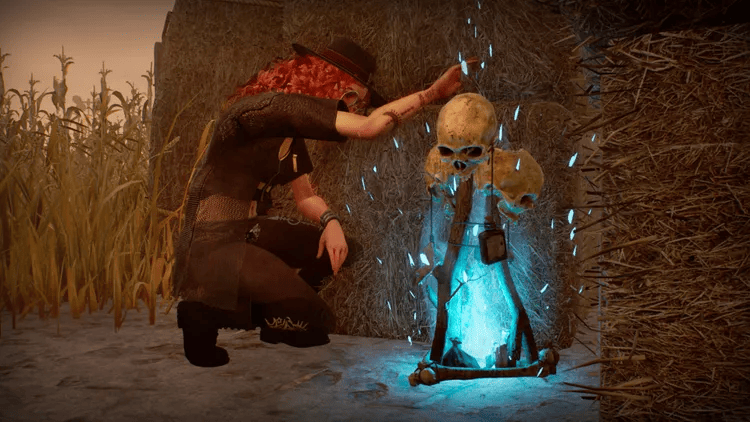
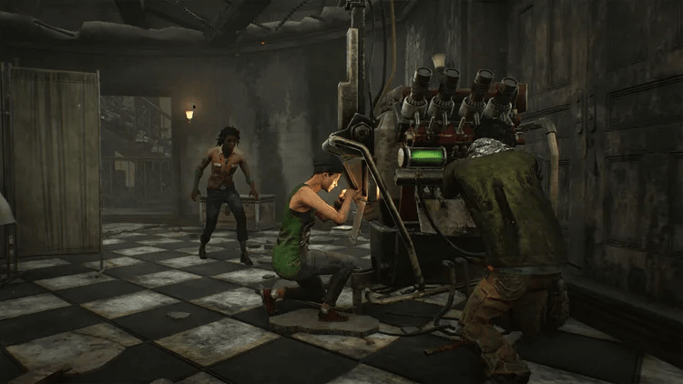
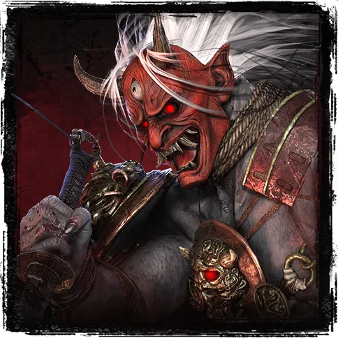
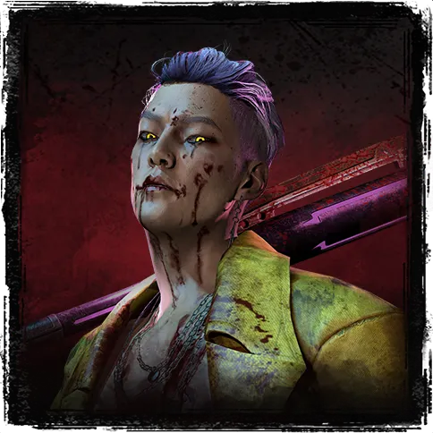

Dead by Daylight is a multiplayer horror game where one player is a Killer, and four others are Survivors.
The Survivors must repair five generators to escape, while the Killer hunts them down to sacrifice them to a dark entity. Each character has unique abilities, adding strategy to the chase.
The game features a mix of original and iconic horror characters from franchises like Halloween and Resident Evil, creating tense, cat-and-mouse gameplay in eerie, atmospheric maps.
 
I prefer playing as a Survivor in Dead by Daylight, mostly because of the cooperative gameplay, the challenge of outsmarting the Killer, and the tension of hiding, repairing generators, and working with others to escape. Survivors rely on strategy, teamwork, and stealth, making it an intense and thrilling experience where every decision can mean life or death. But still I have couple of my favorite Killer.
if to talk about my favorite survs its: Feng Ming and Sable. Feng Ming - is one of the oldest characters meanwhile Sable is one of the newest in dbd. Both of them has good perks for outrunning killers and fixing generators. For example Feng Ming's perk "Lithe" gives you 150% of speed after performing a vault for 3 seconds. It's really usfull when you are trying to escape from the Killer. Also both have really intersting background story.
| The Ghost Face | The Good Guy | The Nurse | The Huntress | The Oni | The Trickster |
|  |  |